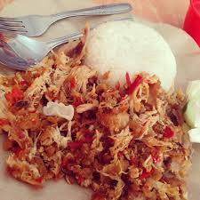

Ayam Geprak ini adalah yang pertama di salatiga. Pedasnya bikin ketagihan dan tempatnya asik untuk kumpul bersama teman atau mengerjakan tugas bersama. Lokasi Ayam geprak ini adalah di kemiri belakang SMAN 1 salatiga. Harganya hanya 11K saja.
